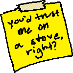
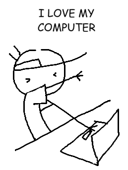
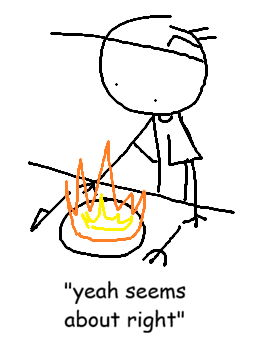
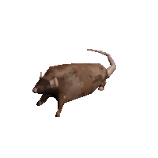
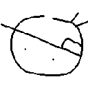

who am i?
you can call me skribster, or skrib for short. i do a bunch of my things in my freetime, but i'm mainly a hobby programmer and artist. i've also recently gained the title of "worst cook of all time"



what is this?
this whole website is just a collection of personal stuff, that is, musings and works related to computer programming, technology, art, and whatever i'm interested in at the time!!!!
don't expect this to be the neatest website because like in real life i hoard a lot of things... >:]
my projects
-
Lugbyte
a bytecode interpreter that messes around with the 'box' metaphor for teaching programming
-
gridticks
small game i made for the GMTK 2026 Game Jam, theme was 'countdown'
-
P0PUP P4NIC
game i made for the GMTK 2024 Game Jam, theme was 'built to scale'
(wow, two game jam games in a row!)
-

skribster.com
isn't it weird linking the source code to a website in its own website???
socials
where else you can find me :]